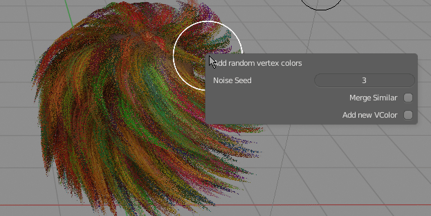

Mesh Ribbon operations:¶
Add Weights¶
 Add Ribbon Weights - create vertex weight gradient from strand root to tip
Add Ribbon Weights - create vertex weight gradient from strand root to tip
Generate gradient¶
 Add vertex colors gradient - create black and white color gradient from strand root to tip
Add vertex colors gradient - create black and white color gradient from strand root to tip
Bake AO¶
Bake AO to vertex color - you can set light transmission bounces, and select baking front/back faces or both
If you select multiple objects they will occlude the last mesh (good for receiving shadows from head to hair -> select head mesh then hair and bake)
Generate random vertex colors¶
 Add random vertex colors - assign different color for each mesh ribbon strand.
Note: I recommend Vertex Color Master addon for more detailed control over managing vertex colors on mesh (I added some features to VCMaster with Hair Tool in mind - more advanced color randomization per mesh island, drawing gradients)
Sample UV from Target¶
 Creates new uv channel. Samples UV from target object, based on contact point of each hair card root position thus allowing to color hair, by color of base mesh
Creates new uv channel. Samples UV from target object, based on contact point of each hair card root position thus allowing to color hair, by color of base mesh
Sample Weights from Target¶
Same as Sample UV from target object, except it samples target object weights. This way, after parenting hair to body armature, hair can follow target object animation